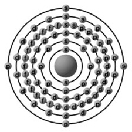
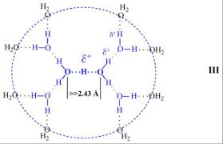
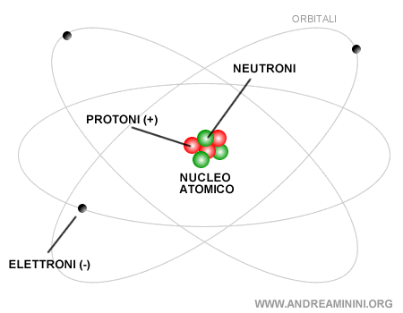
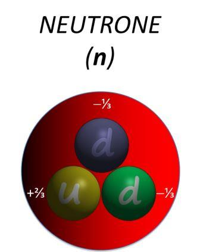
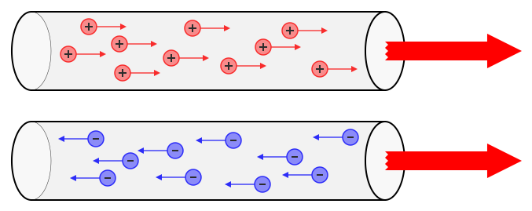

| Atomo | definizione: L'atomo (dal greco ἄτομος átomos: indivisibile) è la struttura nella quale la materia è organizzata in unità fondamentali che costituiscono gli elementi chimici. Gli atomi si aggregano frequentemente in unità stabili dette molecole che caratterizzano molte sostanze. Concepito come l'unità più piccola e indivisibile della materia secondo la dottrina atomistica dei filosofi greci Leucippo, Democrito ed Epicuro, e teorizzato su base scientifica all'inizio del XIX secolo, verso la fine dell'Ottocento, con la scoperta dell'elettrone, fu dimostrato che l'atomo è composto da particelle subatomiche (oltre all'elettrone, il protone e il neutrone). Se nel mondo fisico abituale la materia, nei suoi stati solido, liquido e gassoso, è costituita dalle unità elementari degli atomi, a valori di pressione e temperatura sufficientemente elevati la loro esistenza non è possibile, determinandosi lo stato di plasma. |
esempio: Per esempio un atomo di piombo ha numero atomico 92 ma numero di massa di 207: nel piombo i protoni sono 92, mentre i neutroni sono 115. |
 |
| Protone | definizione: Il protone è una particella subatomica fondamentale che si trova nel nucleo degli atomi. Ha una carica elettrica positiva di +1, che è fondamentale per l'interazione elettromagnetica e per la stabilità degli atomi e la massa è di circa 1.6726 × 10^-27 kg, che è circa 1836 volte quella di un elettrone. |
esempio: Ad esempio l'atomo di ossigeno ha 8 protoni mentre quello di idrogeno ne ha soltanto uno. |
 |
| Elettrone | definizione: L'elettrone è una particella subatomica fondamentale che svolge un ruolo ben definito nella struttura degli atomi. L'elettrone ha una carica elettrica negativa di -1 e la sua massa è molto piccola, circa 9.109 × 10^-31 kg, che è circa 1/1836 della massa del protone. Il ruolo principale é che sono responsabili della conduttività elettrica nei materiali e delle interazioni chimiche tra atomi, contribuendo alla formazione di legami chimici. |
esempio: La maggior parte degli elettroni presenti nell'universo è stata prodotta dal Big Bang, ma possono essere generati anche dal decadimento beta degli isotopi radioattivi e in collisioni ad alta energia, mentre possono essere annichilati dalla collisione con i positroni o assorbiti in un processo di nucleosintesi stellare. |
 |
| Neutrone | definizione: Il neutrone è una particella subatomica che fa parte del nucleo degli atomi. Ha una carica neutra e ha la massa simile a quella dei protoni. |
esempio: per esempio, quando si scrive ²173Al s'intende un nuclide composto di Z=13 protoni ed N=A−Z=27−13=14 neutroni. |
 |
| Campo elettrico | definizione: Un campo elettrico è una regione dello spazio in cui una carica elettrica subisce una forza elettrica, è generato da cariche elettriche statiche o da correnti elettriche. L'intensità del campo elettrico è misurata in volt per metro (V/m). Esistono 2 tipi di Campi elettrici: Campo Elettrico Uniforme: Ha la stessa intensità e direzione in tutta la sua estensione e Campo Elettrico Non Uniforme: La sua intensità e direzione variano nello spazio. |
esempio: Un comune esempio di sorgente di campo elettrostatico è la televisione. Quando la TV è accesa lo schermo è caricato positivamente e attira elettroni dal tubo catodico. Quando la televisione viene spenta rimane sullo schermo uno strato di particelle di carica negativa. |
 |
| Corrente elettrica | definizione: La corrente elettrica è il flusso di cariche elettriche che si muovono attraverso un conduttore, come un filo. È una grandezza fisica fondamentale in elettronica e ingegneria elettrica. La corrente elettrica si misura in Ampere (A). esistono 2 tipi di correnti: Corrente continua (CC): Fluisce in un'unica direzione e Corrente alternata (CA): Inverte periodicamentela direzione del flusso di cariche. |
esempio: Un esempio utile per comprendere cos’è la corrente elettrica è quello dei vasi comunicanti. Collegando tra loro due contenitori con dell’acqua all’interno, il liquido tenderà a scorrere dal serbatoio con un livello d’acqua maggiore verso quello con un livello inferiore per effetto della forza di gravità, fino ad ottenere lo stesso livello e raggiungere uno stato di equilibrio. |
 |